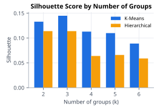
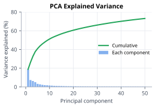
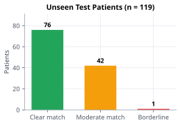
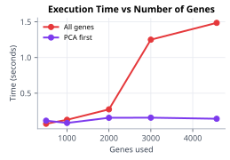

PROJECT PRESENTATION
Department of Computer Science and Engineering
KLH Bachupally Campus, Hyderabad
Department of Computer Science and Engineering
KLH Bachupally Campus, Hyderabad




Reading the results: K-Means separates the groups better than Hierarchical at every k, and the groups overlap (silhouette below 0.15). PCA first keeps clustering time flat while using all genes grows about 10x. 76 of 119 unseen patients land in a group with a clear match.